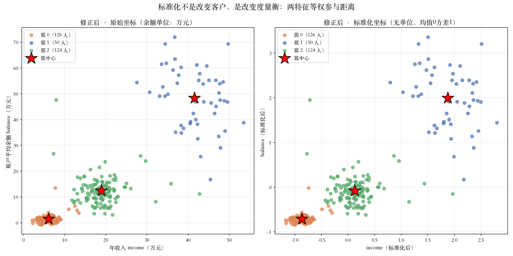
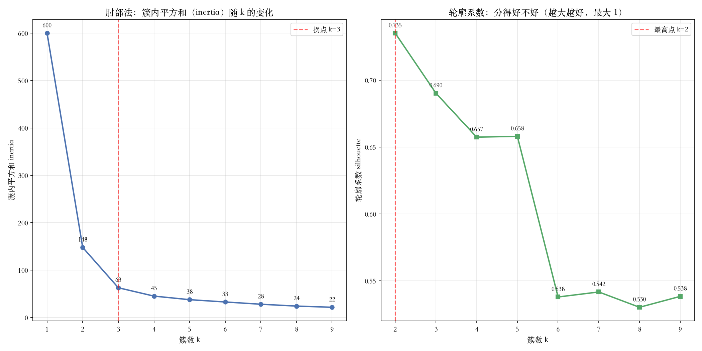

客户总数
300
data/mall_customers_yuan.csv
自然客群数 k
3
肘部法拐点 k=3 · 轮廓系数 0.690
簇内平方和 inertia
62.79
标准化坐标 · 3 轮收敛
特征
income / balance
StandardScaler 标准化后等权
聚类结果（原始坐标，余额单位：万元）

三类客群画像与业务动作
低收低余的年轻客群 · 126 人（42%）
均龄 21.5 岁 · 平均收入 6.1 万 · 平均余额 1.5 万
潜力客户。业务动作：开户礼、首卡渗透、校园/新人专享理财。
中收中余的主力客群 · 124 人（41%）
均龄 37.3 岁 · 平均收入 18.9 万 · 平均余额 12.5 万
银行基本盘。业务动作：交叉销售基金与理财、提升产品持有数。
高收高余的富裕客群 · 50 人（17%）
均龄 47.1 岁 · 平均收入 41.6 万 · 平均余额 48.4 万
高价值客户。业务动作：专属客户经理、私行服务、资产配置。
选 k 依据：肘部法 + 轮廓系数（两个证据不一致时，听业务的）
